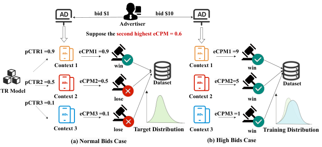
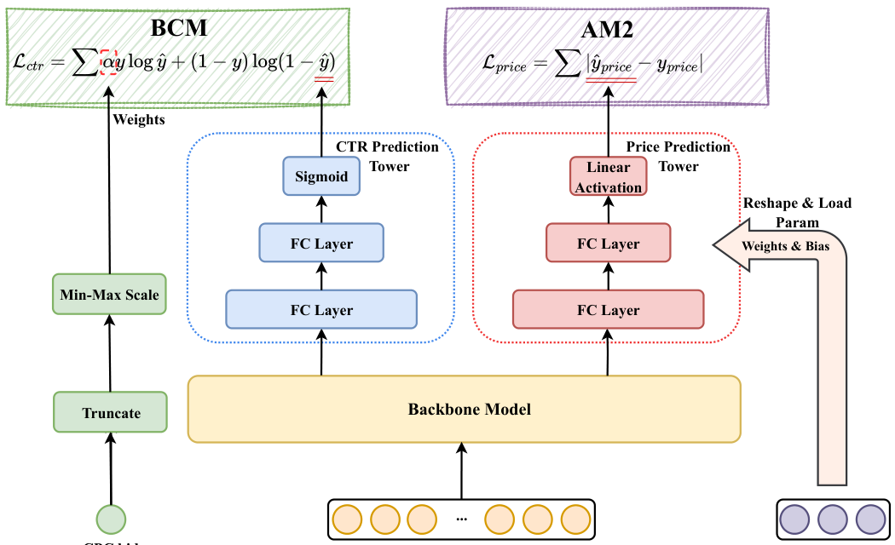

AIE: Auction Information Enhanced Framework for CTR Prediction in Online Advertising (在线广告 CTR 预估的竞价信息增强框架)
- 会议/期刊: RecSys 2024
- 作者与机构: Yang Yang, Bo Chen, Chenxu Zhu, Menghui Zhu, Xinyi Dai, Huifeng Guo, Muyu Zhang, Zhenhua Dong, Ruiming Tang（华为诺亚方舟实验室、华为技术）
- 推荐链路定位: 精排（CTR 预估）
- 研究方向: CTR/CVR 预估与特征交叉 / 去偏公平与工业架构
- 论文原文: https://arxiv.org/abs/2408.07907v1
- 开源代码: https://github.com/mindspore-lab/models
TL;DR (1分钟核心速览)
在线广告精排只吃用户/广告/上下文特征，却忽略了决定曝光的后验竞价信号（市场价、CPC 出价），且高出价导致低相关上下文被过度曝光、训练 CTR 分布偏移（本文命名为 auction bias）。AIE 用两个仅训练期生效的可插拔模块破局：AM2 以场景感知动态权重网络做市场价回归辅助任务，BCM 用截断+Min-Max 的出价因子重加权正样本。iPinYou 全库 AUC 上 7 个 backbone 平均 RelaImpr 1.01%、Rev 3.95%；线上一个月 A/B 提升 eCPM 5.76%、CTR 2.44%、预测偏差降 5.38%，推理耗时仅 +0.5%。
Background & Motivation (背景与核心矛盾)
- 主流范式: 工业精排以 eCPM = pCTR × bid 排序，CTR 模型只用 \(\boldsymbol{x}\)（用户/广告/上下文）训练；近期 MTAE 尝试把后验市场价作为辅助任务引入。
- 前人局限: ①MTAE 把市场价人工分桶做多分类，桶边界靠经验，而图 1(b) 显示不同行业场景的市场价分布差异极大，分桶一旦错位收益即翻负；②完全忽略竞价本身对训练分布的影响——bid 直接决定曝光，进而决定样本分布。
- 核心洞察 (Key Insight): 同一广告给出价 $1 时仅在 pCTR=0.9 的上下文胜出，给出 $10 时连 pCTR=0.1 的低相关上下文也胜出（图 2），这些"被买来的曝光"压低该广告的统计 CTR，训练分布\(P(x,y)\)系统性偏离无偏目标分布\(Q(x,y)\)；同时市场价与真实 CTR 呈正相关（图 1(a)），说明价格是可学的强信号而非噪声。
- 本文切入点: 后验信号只在训练期注入——用"回归替代分桶"吃满价格信息，用"出价重加权"把分布拉回目标分布，两个模块推理期完全下线。

Method (核心方法设计)
1. 整体框架 (Overall Architecture)
共享 backbone 吃常规特征 \(\boldsymbol{x}\)，末端分叉出 CTR 塔与价格塔：AM2 用场景特征\(\boldsymbol{s}\)（广告位、App 类目、小时等）生成的价格塔权重，让价格辅助任务在不同竞价环境下自适应；BCM 在样本级用 CPC 出价算出权重\(\alpha\)，仅乘在 CTR 塔的正样本交叉熵上。两者协同训练，梯度经共享 embedding 与 backbone 回灌主任务；由于市场价与 bid 均为后验特征，两模块在推理阶段被整体摘除，线上只走原模型，零延迟代价。工程上采用小时级流式增量训练以跟上竞价波动。
flowchart TD
A["常规特征 x + 场景特征 s"] --> B["共享 Backbone"]
B --> C["CTR 塔 → pCTR"]
B --> D["价格塔 (权重由 s 动态生成) → 市场价回归"]
E["CPC bid"] --> F["截断 + Min-Max → α"]
F --> G["重加权正样本 BCE"]
C --> G
D --> H["MAE 辅助损失"]
2. 关键设计拆解 (Key Designs)
- AM2：场景感知的价格辅助任务：痛点是从未见过的人工分桶与跨场景分布漂移。做法是把场景 embedding \(\boldsymbol{E}_s\)经 reshape+split 直接生成价格塔每层参数而非共享静态参数：\(\mathbf{W}^{(k)},\mathbf{b}^{(k)}=\text{Reshape}(\text{Split}(\boldsymbol{E}_s))\)，\(\mathbf{h}^{(k)}=\sigma(\mathbf{W}^{(k-1)}\mathbf{h}^{(k-1)}+\mathbf{b}^{(k-1)})\)，输出\(\hat{y}_{price}\)后以 MAE 回归\(\mathcal{L}_{price}=\sum|\hat{y}_{price}-y_{price}|\)。用回归而非分桶分类，免去桶边界先验；用动态权重，等价于为每个竞价环境实例化一条"专用价格塔"，从而把场景差异从主任务中剥离出去，只需共享底层表征即可反哺 CTR。
- BCM：出价校准的样本重加权：痛点是被高出价"买来"的低相关曝光污染正样本。先截断极端值 \(C'=\text{clip}(C,min,max)\)，再线性映射到\([a,b]\)得\(\alpha=a+\frac{b-a}{max-min}(C'-min)\)，\([a,b]\)默认\([0.5,2]\)，按场景分别统计以适配分布差异；随后\(\mathcal{L}_{ctr}=\sum\alpha\,[y\log\hat{y}+(1-y)\log(1-\hat{y})]\)，只加权正样本，并通过调\(a,b\)使加权后正样本比例的整体期望与原分布一致，避免预测系统性上偏。理论上它与 IPS 同构：倾向分\(p_i=P(x_i,y_i)/Q(x_i,y_i)\approx 1/\alpha\)，但广告场景下\(Q\) 不可观测，故用出价作为其可计算的代理。
- 训练目标、负采样与推理效率：总损失 \(\mathcal{L}=\mathcal{L}_{ctr}+w\cdot\mathcal{L}_{price}\)，\(w\)从\(10^{-5}\sim10^{-3}\) 搜索（只关心 CTR 表现，价格塔精度不设约束）；负样本沿用曝光日志中的真实未点击样本，不做额外负采样。推理侧仅保留原 backbone，实测训练 10.5→11 GPU·h、全测试集推理 553→556 s，开销可忽略。副作用是 BCM 抬高了高出价物品的 pCTR，平台在与其他 DSP 争夺高价值流量时获得竞价优势，收益二次放大。
Experimental Setup & Evaluation Protocol (实验设置与评估协议)
- 数据集与预处理:
| 数据集 | #样本/曝光 | 特征维度 | 稀疏度/场景说明 | 划分方式 |
|---|---|---|---|---|
| iPinYou | 19.50M | 937.67K (one-hot) | 含 market price 与 bid，10 天日志 | 每广告主前 7 天训练 / 后 3 天测试 |
| 工业数据集 | >600M | 未披露 | 数百站点与 App，含创意/类目/行为/广告位 | 时间戳切分（前 7 天训练，第 8 天测试） |
- 数据划分与防穿越: iPinYou 沿用按广告主的时间切分；工业集严格按全局时间戳切分并留出验证集，竞价特征仅存在于训练侧，测试集不注入任何后验信息。
- 排名评测协议: 非采样排序，在全测试集上算 AUC / csAUC（csAUC 为 CPM 敏感 AUC，衡量高价值正样本是否被排得更高）；Rev / Rev NDCG 按 (weekday, hour, slotid) 分组模拟单坑拍卖，取 eCPM 最高者计费，属全库 Auction-level 模拟评估。
- 对比基线与超参: backbone 为 DNN、DCN、DeepFM、AutoInt、FiBiNET、DCNv2、DFFM，外加引入市场价的 MTAE；embedding 维度 \(d=8\)、batch 2000、Adam，价格塔 1–3 层、每层 {16,32,64}，5 次重复取均值，\(p<0.05\) 显著性检验，RelaImpr 相对基线归一。
Key Experimental Results (实验关键数据)
1. 主实验对比 (Main Results)
iPinYou（Bold 为最优，* 表示 \(p<0.05\)；Metric 列为各 backbone 的 AIE 相对自身基线的平均 RelaImpr）:
| Backbone | AUC (Base/MTAE/AIE) | csAUC (Base/AIE) | Rev (Base/AIE) | Rev NDCG (Base/AIE) |
|---|---|---|---|---|
| DNN | 0.7755 / 0.7780 / 0.7792* | 0.7762 / 0.7798* | 26.489 / 28.428* | 0.1249 / 0.1341* |
| DCN | 0.7770 / 0.7769 / 0.7797* | 0.7777 / 0.7804* | 27.317 / 28.355* | 0.1289 / 0.1338* |
| DeepFM | 0.7757 / 0.7759 / 0.7780* | 0.7763 / 0.7786* | 27.640 / 27.652* | 0.1304 / 0.1305* |
| AutoInt | 0.7738 / 0.7772 / 0.7793* | 0.7743 / 0.7798* | 26.778 / 28.536* | 0.1263 / 0.1346* |
| FiBiNET | 0.7763 / 0.7763 / 0.7785* | 0.7768 / 0.7792* | 26.544 / 27.808* | 0.1252 / 0.1312* |
| DCNv2 | 0.7766 / 0.7776 / 0.7781* | 0.7771 / 0.7787* | 27.681 / 27.954* | 0.1306 / 0.1319* |
| DFFM | 0.7766 / 0.7757 / 0.7782* | 0.7775 / 0.7787* | 26.440 / 27.540* | 0.1247 / 0.1299* |
| RelaImpr (Avg) | MTAE 0.32% → AIE 1.01% | — → 1.00% | 1.47% → 3.95% | 1.46% → 3.97% |
工业集（离线）: FiBiNET 0.8207→0.8225、DCN 0.8219→0.8231、EDCN 0.8226→0.8240、DFFM 0.8228→0.8239、HierRec 0.8239→0.8249（AUC），csAUC 亦全面提升。
2. 消融实验 (Ablation Study)
以 AutoInt 为 base（原文仅给图 4 曲线，下列趋势为图示读数定性结论；Base 数值取自表 1）:
| 变体 | AUC | csAUC | Rev | Rev NDCG | 说明 |
|---|---|---|---|---|---|
| Base | 0.7738 | 0.7743 | 26.778 | 0.1263 | 基准 |
| + BCM | 微增 | 微增 | 显著 ↑ | 显著 ↑ | 纠偏主要体现收益而非排序 |
| + AM2 | 明显 ↑ | 明显 ↑ | ↑ | ↑ | 价格辅助显著增强高价值排序 |
| + AIE (BCM+AM2) | 最高 | 最高 | 最高 | 最高 | 两模块互补 |
3. 关键实验发现 (Key Findings)
- 回归优于分桶：MTAE 在 DCN 上 AUC 0.7769 < 基线 0.7770（负增益），而 AIE 在全部 7 个 backbone 上均为正增益，AutoInt 上 AUC RelaImpr 达 2.01%；平均从 MTAE 的 0.32% 提升到 1.01%，印证人工分桶对价格分布把握不稳、回归+场景动态权重更鲁棒。
- 收益不是靠牺牲排序换来的：以 DCN 为基，低出价物品曝光占比 57.8%→52.2%（−5.6 pt），中/高出价 +3.2 / +3.5 pt，同时 AUC 同步上升，说明模型学会了"感知高价值流量"而非单纯放大高价广告。
- 模块分工清晰：线上 AM2 单独 eCPM +3.94% 但预测偏差反而恶化 +2.58%；叠加 BCM 后 eCPM +5.76%、RPM +6.14%、bias −5.38%，证明 AM2 负责增益、BCM 负责纠偏，二者缺一不可。
Highlights & Limitations (亮点、对比与审稿批判)
- 与代表作对比 (vs. Prior Work): 相比 MTAE，本文把"价格多分类"换成"场景感知动态参数回归"，并额外启用 MTAE 完全没用到的 bid 信号做去偏；相比 IPS 类去偏工作，无需估计不可观测的无偏分布 \(Q\)，直接用出价构造倾向分代理；相比 DFFM/HierRec 等场景建模，场景信息只用于生成辅助塔参数，不侵入主任务，因而可插拔。
- 可迁移亮点: ①"后验特征只在训练期注入 + 推理期摘除"是低成本引入外部信号的通用范式，可迁到 CVR、LTV 预估；②用可计算的业务量（出价/预算）替代难以估计的倾向分做重加权，适用于任何有竞争性分配机制的场景（如拍卖式召回、流量分配）。
- 审稿级局限批判: ①BCM 假设广告主调价不频繁且模型可小时级更新，一旦调价策略高频或反馈延迟，\(\alpha\)与实际倾向分脱钩，重加权可能反向放大偏差；②离线 AUC 增益仅 0.2–0.4 个点，且作者自承测试集本身有偏、离线指标难以反映真实效果，结论高度依赖单平台一个月 A/B，公开验证仅 iPinYou 一个较老数据集，泛化性证据偏薄；③\([a,b]\) 上下界、截断阈值与场景切分粒度均为人工超参且敏感，缺少敏感度分析。
Rating (四维评分)
- 方法创新性 (Novelty): ⭐⭐⭐⭐ （首次形式化 auction bias，并用"场景动态参数辅助塔 + 出价代理 IPS"两条互补路径同时解决信号利用与分布偏差，思路干净但单点算子不算突破性）
- 评估协议与实验扎实度 (Protocol & Experiments): ⭐⭐⭐⭐ （7 个 backbone + 公共集 + 6 亿曝光工业集 + 一个月线上 A/B 与置信区间，全库排序与 Rev 模拟设计考究；扣分在消融仅有曲线、公开数据单一）
- 写作与数学规范度 (Clarity & Rigor): ⭐⭐⭐⭐ （BCM 与 IPS 的形式化对照清晰、损失与参数生成公式完备；但 BCM 最优性仅以 \(\hat{\theta}=\arg\min\sum l(z_i,\theta)p_i+\lambda R(\theta)\) 一笔带过，缺少重加权后方差/一致性的严格论证）
- 工业落地与复现价值 (Industrial & Practical Value): ⭐⭐⭐⭐⭐ （推理零开销、训练 +0.5 GPU·h，MindSpore 代码开源，线上全量落地并带来 eCPM +5.76%，是极少数"离线小涨、线上大涨"的可复现工业范式）